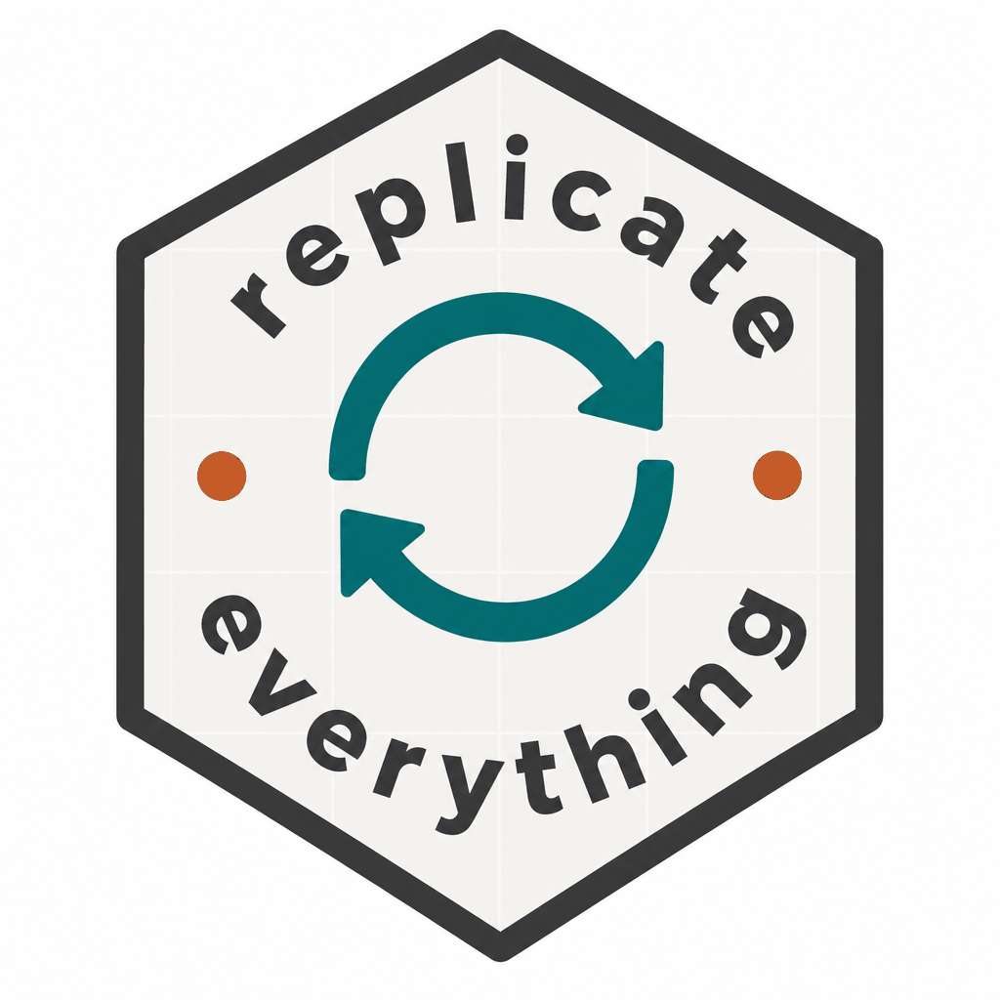

Validate a folder-backed replication study
Source:R/check_folder_replication.R, R/check_package_replication.R, R/check_replication.R
check_replication.RdRuns a transparent checklist: study layout, replication.yml, code and data
paths, resolvable code file links (source() / Stata do), baked display
outputs, optional tests/testthat/, substantive
(published-value) checks under tests/substantive/, and (optionally) live
execution of every table and figure.
Usage
check_folder_replication(
location = ".",
full_replication = FALSE,
registry_root = NULL
)
check_package_replication(location, full_replication = FALSE)
check_replication(
location = ".",
full_replication = FALSE,
registry_root = NULL
)Arguments
- location
Local study path, GitHub address, or installed package path. Defaults to the current working directory when it contains
replication.ymlorDESCRIPTION.- full_replication
If
TRUE, also run every table and figure viarun_replication()and require success.- registry_root
Optional path to the registry checkout (folder studies in a monorepo). Defaults to
getOption("replicateEverything.registry_root").
Value
A list with ok (logical), checks (data frame), and study_path.
A list with ok (logical), checks (data frame), and package_path.
A list with ok (logical), checks (data frame), and study_path
or package_path.
Functions
check_folder_replication(): Folder-backed implementation.Runs a transparent checklist: study layout,
replication.yml, code and data paths, resolvable code file links (source()/ Statado), baked display outputs underoutputs/, optionaltests/testthat/, substantive substantive (published-value) checks undertests/substantive/, and (optionally) live execution of every table and figure.check_package_replication(): Package-backed implementation.Runs a transparent checklist: package layout,
replication.yml, studymake_*/format_*helpers, baked artifacts, substantive (published-value) checks undertests/substantive/, and (optionally) live execution of every table and figure via replicateEverything.